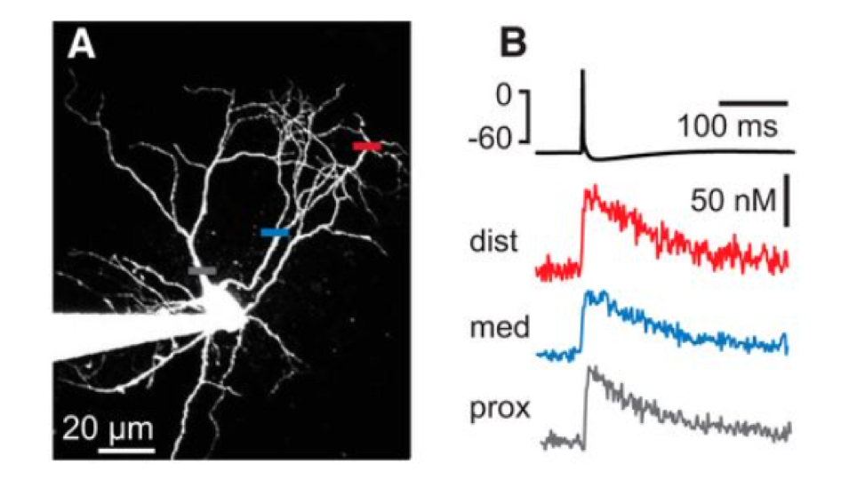

2B: Nerve signals, from Nernst to Hodgkin–Huxley
Elective project, round 1 (P2). Report due Sun 25 April, defense Tue 27 April
The question
Every animal cell has a voltage across its membrane, but nerve cells use it to send signals: a sharp pulse, the action potential, travels along the axon at constant speed and shape. In the brain, neuroscientists often see these pulses only indirectly, as flashes of fluorescence from calcium that enters the cell when it fires. Your question is:
How do ion gradients and voltage-gated channels produce an action potential, and what can a calcium signal tell us about how a neuron fires?
The physics is from Block B: the Nernst potential, ion pumps and the resting potential (Membrane potentials and ion pumps), and then Nelson chapter 12. The simulation exercise was written by Geir Halnes (NMBU) and has been used in the course since 2019.

Material
Exercise_HHCa.ipynb: the Hodgkin–Huxley model in Python, with the tasks (the instructions are handed out in week 14)Exercise_HHCa_2019.pdf: the same exercise as a PDFca_imaging_mean_intensity.csv: mean fluorescence intensity in one region of a calcium imaging movie, frame by framefluorescence_microscopy.pdf: slides on fluorescence microscopy and calcium indicators- The neuron demo
Milestones
| When | What you show | |
|---|---|---|
| M1 | Tue 30 Mar (W13) | A running model of the resting potential: ion concentrations relaxing to the pump–leak steady state, compared with the analytical result |
| M2 | Tue 13 Apr (W15) | Validated core figure: the action potential and calcium response of the extended Hodgkin–Huxley model, with the checks in part 4 |
| M3 | Sun 25 Apr | Report and LLM log on Canvas |
| M4 | Tue 27 Apr (W17) | Oral defense |
What the project should contain
1. The resting potential (weeks 11–13)
Write a small time-dependent model of a cell with Na⁺, K⁺ and Cl⁻ channels (Ohmic leaks, see the notes), a 3:2 sodium–potassium pump and trapped macroions. Let the concentrations and the potential evolve from an initial state to steady state.
- Show that the steady state reproduces the analytical pump–leak potential, and that chloride ends up at its Nernst potential.
- What happens when you switch the pump off? How long does it take for the cell to run down, and towards what state?
2. The action potential (from week 14)
Work through Problems 1 and 2 of the notebook: speed up the gating rates to brain temperature, find the firing rate against input current (the \(f\)–\(I\) curve) and its threshold, and add a high-voltage-activated calcium channel.
3. Calcium dynamics and the data
Work through Problem 3 of the notebook: add intracellular calcium, and tune its parameters to the experiment. Then analyse the imaging data in ca_imaging_mean_intensity.csv:
- Find the individual calcium transients, subtract the background and fit their decay. What is the decay time, and how does it compare with \(\tau_\text{Ca}\) in the model?
- What can and cannot be inferred about the firing rate from the rise of the fluorescence?
4. Validation
- Check the Nernst potentials in the model by hand from the concentrations.
- Show that the model converges: halve the time step and compare.
- Without calcium, the original model must fire two action potentials for the default stimulus (as stated in the notebook). Check it before changing anything.
- For a single spike, the calcium rise should equal \(k_\text{Ca}\) times the integrated calcium current, and the decay should be exponential with time constant \(\tau_\text{Ca}\). Check both against your simulation.
Working with an LLM on this project
The notebook is written in an old style (from pylab import *, forward Euler). An LLM can modernise it, vectorise it, or replace the integrator. Do so only if you can show that the new version gives the same action potential as the original. When the LLM suggests parameter values for ion channels, ask for the source and check it.
The oral defense
About 15 min per student. Typical questions:
- Derive the Nernst potential. Why is the resting potential close to the potassium Nernst potential?
- Why does a cell need ion pumps? What would happen without them?
- What do the gating variables \(m\), \(h\) and \(n\) describe? Why is \(m\) fast and \(h\) slow, and what would happen if they were equally fast?
- Why is there a refractory period?
- What does the calcium signal tell you about the firing, and what does it not tell you?
- What did the LLM get wrong?